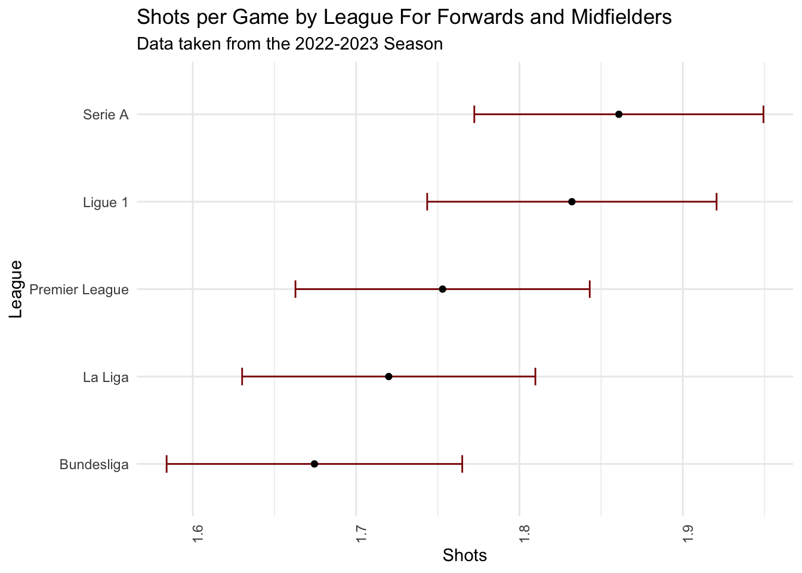
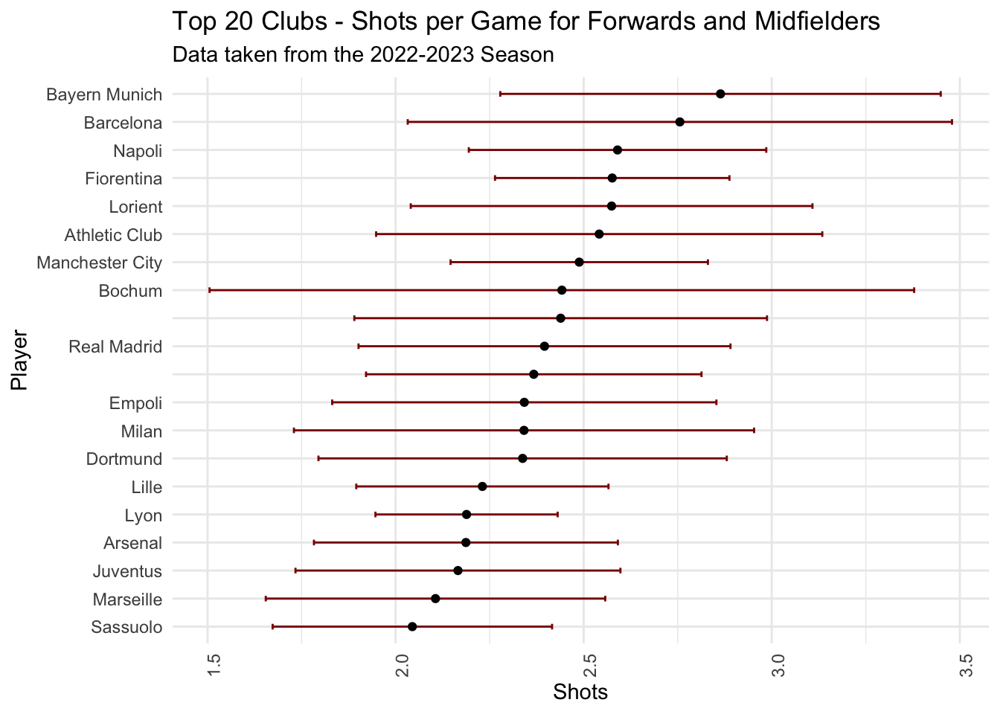

library(tidyverse)
library(readr)
library(here)
library(pander)
# Load in the data:
soccer <- read_delim(here("data/2022-2023_Football_Player_Stats.csv"), delim = ";")
# change Almer\xeda to Almeria
soccer$Player[soccer$Player == "Almer\xeda"] <- "Almeria"Introduction
This is a project to analyze the 2022-2023 season of the top 5 European soccer leagues. We will be using data from the following leagues:
- English Premier League (England)
- Ligue 1 (France)
- Bundesliga (Germany)
- Serie A (Italy)
- La Liga (Spain)
The dataset was obtained from Kaggle and contains player statistics for the 2022-2023 season. Each observation is a player and the columns contain various statistics such as goals, assists, and minutes played. There are 2,689 total observations and 124 variables. The dataset can be found here. The dataset contains 2022-2023 football player stats per 90 minutes.
We are looking to explore the data and answer questions about shots per game across the leagues, and across teams. We will start with some data exploration and then move on to visualizations to answer these questions.
Variables of interest includee:
Player: Name of the playerNation: Nationality of the playerPos: Position of the playerSquad: Team the player plays forComp: League the player plays inGoals: Number of goals scored by the playerShots: Number of shots taken by the player per 90 minutes
Data Exploration
Look at the top ten scorers in 2022-2023 season across all leagues:
soccer %>% select(Player, Nation, Pos, Squad, Comp, Goals) %>%
arrange(desc(Goals)) %>%
slice(1:10)# A tibble: 10 × 6
Player Nation Pos Squad Comp Goals
<chr> <chr> <chr> <chr> <chr> <dbl>
1 "Erling Haaland" NOR FW Manchester City Premier League 25
2 "Harry Kane" ENG FW Tottenham Premier League 17
3 "Victor Osimhen" NGA FW Napoli Serie A 16
4 "Folarin Balogun" ENG FW Reims Ligue 1 14
5 "Wissam Ben Yedder" FRA FW Monaco Ligue 1 14
6 "Robert Lewandowski" POL FW Barcelona La Liga 14
7 "Ivan Toney" ENG FW Brentford Premier League 14
8 "Niclas F\xfcllkrug" GER FW Werder Bremen Bundesliga 13
9 "Alexandre Lacazette" FRA FW Lyon Ligue 1 13
10 "Kylian Mbapp\xe9" FRA FW Paris S-G Ligue 1 13Look at the total goals scroed by each position in the 2022-2023 season:
soccer %>%
group_by(Pos) %>%
summarise(Total_Goals = sum(Goals)) %>%
arrange(desc(Total_Goals)) %>% pander::pander()| Pos | Total_Goals |
|---|---|
| FW | 1048 |
| FWMF | 497 |
| MF | 457 |
| DF | 314 |
| MFFW | 306 |
| DFMF | 61 |
| FWDF | 36 |
| MFDF | 30 |
| DFFW | 14 |
| GK | 0 |
Here note that some positions are overlapped, as FWMF includes players that play both forward and midfield, and DFFW includes players that play both defense and forward, so Total_Goals by position can be a little misleading. It is clear that plain forwards score the most goals, followed by midfielders and then defenders.
Look at the total goals scored within each League in the 2022-2023 season:
soccer %>%
group_by(Comp) %>%
summarise(Total_Goals = sum(Goals)) %>%
arrange(desc(Total_Goals)) %>% pander::pander()| Comp | Total_Goals |
|---|---|
| Ligue 1 | 618 |
| Premier League | 564 |
| Bundesliga | 563 |
| Serie A | 538 |
| La Liga | 480 |
Ligue 1 has the most total goals scored, while La Liga has the least total goals scored for this season.
Visualizations
We now want to look at the average number of shots for a forward or midfielder per game in the top 5 leagues. We will filter the data to only include forwards, midfielders, and players who play both positions. We will then group the data by league and calculate the mean number of shots per game. We will also calculate the standard deviation and standard error of the mean. We will then plot the data using ggplot2.
soccer %>%
filter(Pos %in% c("FW", "MF", "MFFW", "FWMF", "FWDF", "DFFW")) |>
group_by(Comp) %>%
summarize(mean_shots = mean(Shots, na.rm = TRUE),
sd_shots = sd(Shots, na.rm = TRUE),
n_players = n()) %>%
mutate(se_shots = (sd_shots / sqrt(n_players)),
lb_se = mean_shots - se_shots,
ub_se = mean_shots + se_shots) %>%
arrange(desc(mean_shots)) %>% # Sort by mean_shots in descending order
head(20) %>% # Select the top 20 players
mutate(Comp = fct_reorder(Comp, mean_shots)) %>% # Reverse the order of the levels of the factor
ggplot(aes(x = Comp, y = mean_shots)) +
geom_errorbar(aes(ymin = lb_se, ymax = ub_se), width = 0.2, color = "darkred") +
geom_point() +
geom_line(color = "red") +
labs(title = "Shots per Game by League For Forwards and Midfielders",
subtitle = "Data taken from the 2022-2023 Season",
x = "League",
y = "Shots") + theme_minimal() +
theme(axis.text.x = element_text(angle = 90, hjust = 1)) +
coord_flip()
The plot shows that Serie A has the highest average number of shots per game for forwards and midfielders, while the Bundesliga has the lowest average number of shots per game for forwards and midfielders.
We now want to look at the average number of shots for a forward and midfielder per game across all 5 leagues, and will display the top 20 clubs. Again, we filter the data to include only forwards, midfielders, and players who play both positions. We then group the data by league and calculate the mean number of shots per game. We will also calculate the standard deviation and standard error of the mean. We will then plot the data using ggplot2.
soccer %>%
filter(Pos %in% c("FW", "MF", "MFFW", "FWMF", "FWDF", "DFFW")) |>
group_by(Squad) %>%
summarize(mean_shots = mean(Shots, na.rm = TRUE),
sd_shots = sd(Shots, na.rm = TRUE),
n_players = n()) %>%
mutate(se_shots = (sd_shots / sqrt(n_players)),
lb_se = mean_shots - se_shots,
ub_se = mean_shots + se_shots) %>%
arrange(desc(mean_shots)) %>% # Sort by mean_shots in descending order
head(20) %>% # Select the top 20 players
mutate(Squad = fct_reorder(Squad, mean_shots)) %>% # Reverse the order of the levels of the factor
ggplot(aes(x = Squad, y = mean_shots)) +
geom_errorbar(aes(ymin = lb_se, ymax = ub_se), width = 0.2, color = "darkred") +
geom_point() +
geom_line(color = "red") +
labs(title = "Top 20 Clubs - Shots per Game for Forwards and Midfielders",
subtitle = "Data taken from the 2022-2023 Season",
x = "Player",
y = "Shots") + theme_minimal() +
theme(axis.text.x = element_text(angle = 90, hjust = 1)) +
coord_flip()
The plot shows that the club with the highest average number of shots per game for forwards and midfielders is Bayern Munich, while the club with the lowest average number of shots per game for forwards and midfielders is Sassuolo, but these include the top 20 teams with these stats, so there are a lot more teams that have a lower average number of shots per game for forwards and midfielders.
Conclusion and Wrap Up
In this project, we looked at the top ten scorers in the 2022-2023 season across all leagues, the total goals scored by each position, and the total goals scored within each league. We then looked at the average number of shots for a forward or midfielder per game in the top 5 leagues, and displayed the top 20 clubs with the highest average number of shots per game for forwards and midfielders. We found that Serie A has the highest average number of shots per game for forwards and midfielders, while the Bundesliga has the lowest average number of shots per game for forwards and midfielders. We also found that the club with the highest average number of shots per game for forwards and midfielders is Bayern Munich, while the club with the lowest average number of shots per game for forwards and midfielders is Sassuolo. This project was a great way to practice using the dplyr and ggplot2 packages in R, and to practice data manipulation and visualization.
Connection to Class
In regards to my class Data Visualization, these visualizations are effective ways of communicating information. I chose not to use all the teams when looking at the average number of shots for a forward or midfielder per game in across teams to avoid the visualization being too cluttered, and allowing the focus to be on the teams. I chose to use a red color for the points and a dark red color for the error bars to make the visualization easier to read. I also chose to use a minimal theme to make the visualization easier to read. I think these visualizations are effective ways of communicating information.